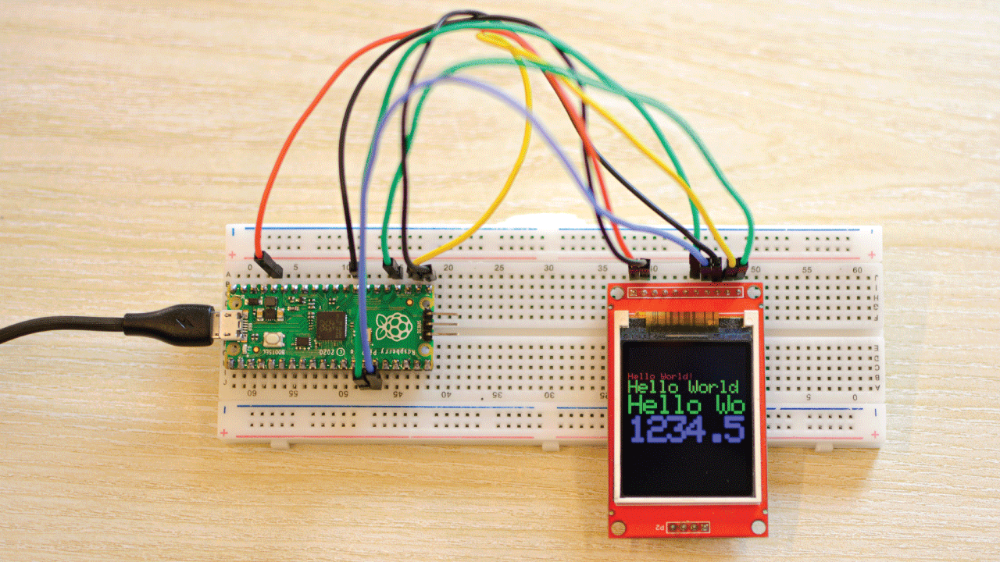
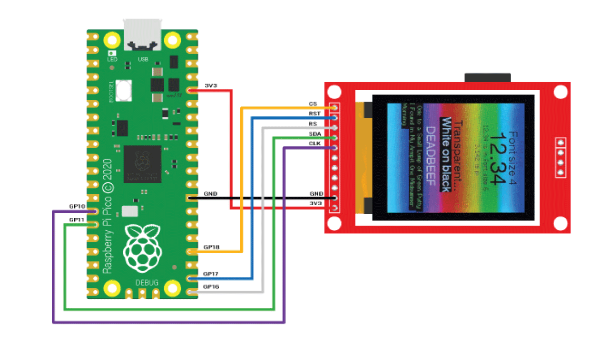

In this tutorial, we will discuss how to interface and run a TFT Graphic Display using a Raspberry Pi Pico. With this display, you can easily print graphics, text, animations, and more.
This project requires only five GPIO pins on the Raspberry Pi Pico. The TFT display demonstrated here is 1.8 inches and works via SPI communication. The same method applies to other sizes of SPI displays as well.

To build and experiment with this project, you will need the following components:
| Sl. No. | Component Name | Quantity | Description |
|---|---|---|---|
| 1 | Raspberry Pi Pico | 1 | Microcontroller board with headers |
| 2 | Micro USB Data Cable | 1 | For power & programming |
| 3 | Breadboard (830 Point) | 1 | For circuit prototyping |
| 4 | TFT LCD Display Module (1.8-inch) | 1 | ST7735 Driver |
| 5 | Jumper Wires | As needed | Male-to-male (7 pieces required) |
Make sure to use an 830-point breadboard (or two smaller ones) to mount the Raspberry Pi Pico and the TFT display safely.

Here are the SPI connections between the Raspberry Pi Pico and the 1.8-inch TFT LCD Display:
| Raspberry Pi Pico Pin | TFT LCD Display Pin | Function |
|---|---|---|
| GP18 | CS | Chip Select |
| GP17 | RST | Reset |
| GP16 | RS (DC) | Register Select / Data Command |
| GP11 | SDA (MOSI) | Data Line |
| GP10 | CLK (SCK) | Clock Line |
| GND | GND | Ground |
| 3V3 (OUT) | 3.3V | Power Supply (3.3V) |
(Note: The SD card portion of the display module is not required for this tutorial; only the display pins need to be connected).
This experiment requires two library files: ST7735.py and sysfont.py.
We will use the Thonny IDE to upload these files to the Raspberry Pi Pico:
Once the libraries are saved on your Pico, paste the following script into Thonny IDE and run it:
from ST7735 import TFT
from sysfont import sysfont
from machine import SPI, Pin
import time
import math
spi = SPI(1, baudrate=20000000, polarity=0, phase=0,
sck=Pin(10), mosi=Pin(11), miso=None)
tft = TFT(spi, 16, 17, 18)
tft.initr()
tft.rgb(True)
def testlines(color):
tft.fill(TFT.BLUE)
for x in range(0, tft.size()[0], 6):
tft.line((0, 0), (x, tft.size()[1] - 1), color)
for y in range(0, tft.size()[1], 6):
tft.line((0, 0), (tft.size()[0] - 1, y), color)
tft.fill(TFT.BLACK)
for x in range(0, tft.size()[0], 6):
tft.line((tft.size()[0] - 1, 0), (x, tft.size()[1] - 1), color)
for y in range(0, tft.size()[1], 6):
tft.line((tft.size()[0] - 1, 0), (0, y), color)
def testfastlines(color1, color2):
tft.fill(TFT.BLACK)
for y in range(0, tft.size()[1], 5):
tft.hline((0, y), tft.size()[0], color1)
for x in range(0, tft.size()[0], 5):
tft.vline((x, 0), tft.size()[1], color2)
def testdrawrects(color):
tft.fill(TFT.BLACK)
for x in range(0, tft.size()[0], 6):
tft.rect((tft.size()[0]//2 - x//2, tft.size()[1]//2 - x/2), (x, x), color)
def tftprinttest():
tft.fill(TFT.BLACK)
v = 30
tft.text((0, v), "Hello World!", TFT.RED, sysfont, 1, nowrap=True)
v += sysfont["Height"]
tft.text((0, v), "Hello World!", TFT.YELLOW, sysfont, 2, nowrap=True)
v += sysfont["Height"] * 2
tft.text((0, v), "Hello World!", TFT.GREEN, sysfont, 3, nowrap=True)
time.sleep_ms(1500)
tft.fill(TFT.BLACK)
v = 0
tft.text((0, v), "Hello World!", TFT.RED, sysfont)
v += sysfont["Height"]
tft.text((0, v), str(math.pi), TFT.GREEN, sysfont)
def test_main():
tft.fill(TFT.BLACK)
tftprinttest()
time.sleep_ms(2000)
testlines(TFT.YELLOW)
time.sleep_ms(500)
testfastlines(TFT.RED, TFT.BLUE)
time.sleep_ms(500)
testdrawrects(TFT.GREEN)
time.sleep_ms(500)
while True:
test_main()